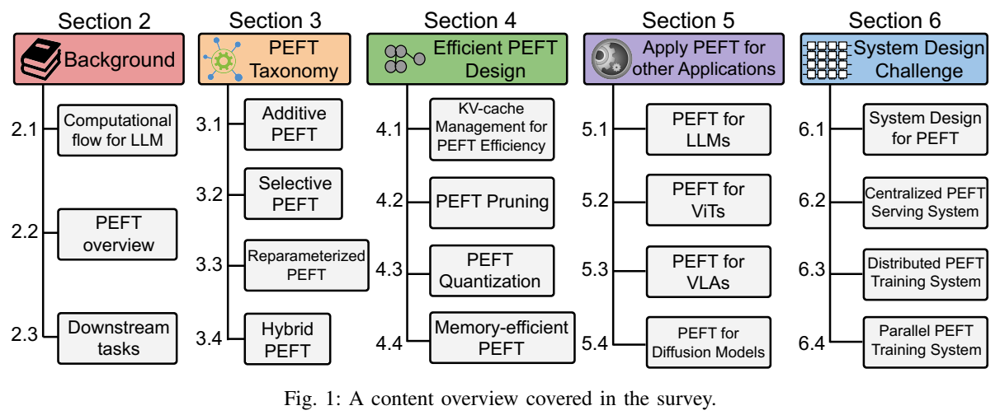
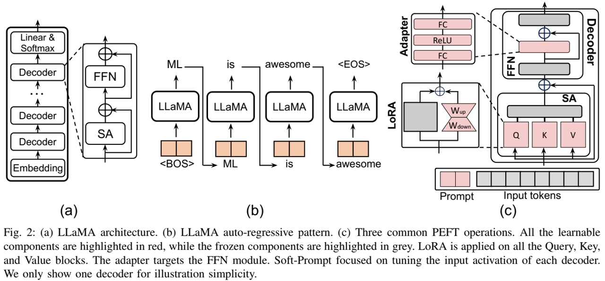
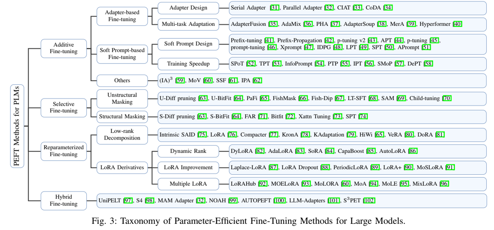

论文阅读五十二：大模型的参数高效微调：综述
摘要
大型模型代表了多个应用领域的突破性进展，在各种任务中取得了显著成就。然而，它们前所未有的规模带来了巨大的计算成本。这些模型通常由数十亿个参数组成，需要大量的计算资源来执行。特别是，当为特定的下游任务定制它们时，尤其是在受计算能力限制的硬件平台上，扩展的规模和计算需求带来了相当大的挑战。
参数高效微调（PEFT）通过在各种下游任务中有效地调整大型模型，提供了一种实用的解决方案。特别是，PEFT是指调整预训练的大型模型的参数以使其适应特定任务或领域的过程，同时尽量减少引入的额外参数或所需的计算资源的数量。在处理具有高参数计数的大规模语言模型时，这种方法尤为重要，因为从头开始微调这些模型可能会在计算上代价高昂且资源密集，给支持系统平台设计带来相当大的挑战。
在这项调查中，我们对各种PEFT算法进行了全面的研究，考察了它们的性能和计算开销。此外，我们还概述了使用不同PEFT算法开发的应用程序，并讨论了用于降低PEFT计算成本的常用技术。除了从算法的角度提供广泛的调查外，我们还研究了各种现实世界的系统设计，以调查与不同PEFT方法相关的实施成本。这项调查为旨在了解PEFT算法及其系统实现的研究人员提供了宝贵的资源，为最近的进展和实际应用提供了详细的见解。
引言
大型模型（LM）最近引起了公众的极大兴趣。它们理解上下文和细微差别的能力使他们能够熟练地处理多个领域的不同任务，包括自然语言处理（NLP）、计算机视觉（CV）等。在NLP领域，大型语言模型（LLMs）在各种任务上取得了重大进展，包括文本生成[1]、[2]、翻译[3]、[4]、个性化聊天机器人[5]、[6]、[7]和摘要[8]，表现出非凡的熟练程度。
早期的研究[1]表明，LLM表现出高度的泛化能力，使他们能够将所获得的知识应用于原始训练中未包含的新任务。这种能力通常被称为零样本学习。然而，微调对于进一步增强LLM以在新用户数据集和任务上获得最佳性能仍然至关重要。
由于其规模，广泛采用的微调LLM策略涉及调整有限数量的LLM参数，同时保持其余参数不变。这种技术被称为参数高效微调（PEFT），涉及选择性地调整一小部分参数，同时保持其余参数不变。此外，PEFT的应用超出了NLP领域，并迅速引起了CV社区的兴趣，用于处理具有大参数的微调视觉模型，如视觉Transformer（ViT）和扩散模型，以及视觉语言模型等学科模型。

在这项调查中，我们系统地回顾和分类了PEFT算法的最新进展，以及在不同场景下与各种PEFT算法相关的系统实施成本。图1显示了本次调查的概述内容。在第二节中，我们介绍了LLM和PEFT的一些基本概念，包括LLM的计算流程、PEFT的基本知识、常用的数据集和任务以及评估基准。我们在第三节中根据计算流程对所有类型的PEFT算法进行了分类。在第III-A节中，我们详细介绍了引入新权重参数或修改激活的加法算法。只需要对现有参数进行微调的算法被归类为选择性方法，在第III-B节中进行了介绍。在第III-C节中，我们探索了重新参数化的PEFT，它构建了原始模型参数的（低维）重新参数化以进行训练，同时将权重转换回来以保持推理速度。此外，存在结合上述技术的算法，我们将其归类为混合方法，在第III-D节中对其进行了详细阐述。我们还在第四节中研究了进一步降低不同PEFT算法计算复杂性的策略，包括KV缓存管理、修剪、量化和内存优化。
在第五节中，我们将本次调查的范围扩展到计算角度之外，以涉及各种潜在的应用场景。具体而言，我们探索将PEFT技术应用于不同的模型架构的创新，包括LLM（第V-A节）、视觉Transformer（第V-B节）、愿景语言对齐模型（第V-C节）和扩散模型（第V-V节），用于各种下游任务，强调了PEFT在各种场景中的多功能性和适用性。之后，在第六节中，我们探讨了PEFT方法的系统设计挑战。讨论包括用于实际PEFT部署的三种高级系统解决方案：PEFT查询服务（第VI-B节）、分布式调优（第VI-C节）和并发PEFT调优（第VI节-D）。最后，在第七节中，我们总结了我们的调查，并从算法和系统的角度提出了几个潜在的未来方向，旨在为该领域的进一步研究和开发提供有价值的见解。
背景
在本节中，我们首先讨论了LLM的计算流程，包括其基本组成部分、计算复杂性以及作为案例研究所涉及的计算流程。然后，我们在第II-B节中简要概述了不同的PEFT算法。
LLaMA计算流程

为了更深入地了解LLM和其他基于Transformer的模型，我们采用了LLaMA-7B，一种尖端的开源LLM模型，来仔细检查LLM和Transformer的架构。如图2（a）所示，LLaMA由三个主要部分组成：嵌入块、解码器块堆栈和由线性和softmax层组成的头块。嵌入层的主要作用是将非结构化文本信息转换为离散的数值向量（标记（tokens））块，以方便后续处理。然后，嵌入的标记被传递到解码器层进行进一步处理。每个LLaMA解码器由两个基本组件组成：多头自注意（MSA）和前馈网络（FFN）。在MSA模块中，每个标记将通过一个注意力图进行聚类，该注意力图是通过输入标记的两个线性映射之间的点生成获得的。然后分组标记将由前馈神经网络进一步处理。此外，LLaMA采用均方根层归一化（RMSNorm）[9]作为层归一化的替代，以确保高效的训练。
LLM在两个重要方面与卷积神经网络（CNN）等其他深度神经网络（DNN）模型不同。首先，LLM表现出固有的自回归特性，需要多次迭代来完成生成任务。此外，LLM结合了一种注意力机制，这是一种计算复杂度随输入长度呈二次方缩放的组件。另一方面，LLM的固有计算特性在于每个解码器层内的关注块。图2（c）描绘了注意力块中计算流的高级概述。
在推理过程中，每个解码器都将三维张量 作为输入标记。输入标记首先与三个权重矩阵 、 和 相乘，产生称为查询（Q）、关键字（K）和值（V）的输出。鉴于MSA模块无法识别位置数据和LLM的固有自回归特性，查询和键将经历一个使用旋转位置嵌入[10]（RoPE，在方程1中表示为 ）对位置信息进行编码的过程。随后，键和值将与之前的标记组合。
在位置嵌入之后，中间激活将经历一系列乘法、softmax和残差加法，以生成MSA输出，如方程式9所述。这里要注意的是，方程式中的 是指多头注意力机制中的特征维度数量。
然后，SA 输出将被转发到 FFN 块进行进一步处理。FFN 块将有另外三个矩阵 、 和 以及计算可以用下式说明：
其中x表示FFN层的输入，SiLU是LLaMA中使用的非线性函数。在原始Transformer中，FFN块可以通过以下方式演示：
最后一个解码器层的输出将被发送到线性层，然后线性层生成一个跨越完整词汇表的概率分布，以预测序列中的下一个标记。然后，生成的标记将与之前的标记连接，并用作下一轮处理的输入。这个生成过程以自回归的方式重复，直到产生一个完整的标记序列，称为完成（图2（b））。对于训练，计算流程类似于推理，除了生成的句子直接与地面真值输出进行比较并产生训练损失。然后，将计算LLM权重的梯度，以尽量减少这种训练损失。
为了分析LLM中的计算成本和内存开销，我们还设置了稍后第三节中使用的一系列参数。表I显示了LLaMA-7B模型中的参数大小和计算维度，作为一个开始示例。
LLM模型根据之前的提示（输入）和之前生成的序列，为每一轮生成一个标记（单词），如图2所示。将重复此过程，直到模型输出命中和终止标记。为了加速LLM模型中的推理过程，人们采取了将之前的键和值存储在KeyValue缓存（KV缓存）中的策略，这样他们就不需要为每个新标记重新计算它们。从数学上讲，我们可以在方程6中表示解码器的KV缓存总成本。方程中，l和b是上下文长度和批大小，l表示层数。 是头维度， 是头数量。
参数高效微调概述
微调对于提高LLM在看不见的用户数据集和任务上的性能仍然至关重要。随着模型大小的增长（例如GPT-2中的1.5B到GPT-3中的175B），标准的完全微调范式需要数千个GPU并行工作，这是非常低效和不可持续的。已经提出了一种算法，即参数高效微调（PEFT），其目的是调整最小参数，以在下游任务上实现比完全调整更好的性能。
在并行发展中，视觉和多模态领域的大规模预训练模型也展示了其有效的表征学习能力，能够通过微调从大型数据集适应较小的数据集或跨各种数据模式。因此，这种能力使PEFT对更广泛的研究界越来越有吸引力。

我们根据其操作将PEFT算法分为加性、选择性、重新参数化和混合微调。如图3所示，通常使用三种主要的加法微调算法：（1）适配器；（2） 软提示；（3） 其他。它们在不同的附加可调模块或参数方面彼此不同。另一方面，选择性微调不需要任何额外的参数，它从骨干模型中选择一小部分参数，只使它们可调，同时在下游任务的微调过程中保持大多数参数不变。我们根据所选参数的分组对选择性微调进行分类：（1）非结构化掩码；（2）结构化掩码。重新参数化表示在两个等效形式之间转换模型参数。具体来说，重新参数化的微调在训练过程中引入了额外的低阶可训练参数，然后将其与原始模型集成以进行推理。这种方法分为两种主要策略：（1）低秩分解和（2）LoRA衍生。混合微调探索了不同PEFT方法的设计空间，并结合了它们的优点。
LLM评估的下游任务
两种类型的任务已被广泛用于LLM评估，第一种是通用语言理解评估（GLUE）[11]基准，它集成了九个句子或句子对语言理解任务（CoLA、SST-2、MRPC、STS-B、QQP、MNLI、QNLI、RTE和WNLI），这些任务因其数据集大小、文本类型和难度级别的多样性而被选择，并基于已建立的现有数据集。它还包括一个诊断数据集，专门用于评估和分析自然语言中固有的各种语言现象的模型性能。此外，它还具有一个公共排行榜来跟踪基准测试的性能，以及一个仪表板来可视化诊断集上的模型性能。
最近LLM论文中使用的另一种类型的数据集是常识推理，它被整合到我们的研究中，迎合了各种研究方面：（1）OpenBookQA[12]旨在促进高级问答研究，深入了解主题和表达语言。（2） PIQA[13]主要强调日常场景，表现出对非传统解决方案的偏好。（3） 社会智商[14]是一种新颖的问答基准，专门用于衡量社会常识智力。（4） HellaSwag[15]作为一个数据集，其本质是确定机器在恰当地总结句子方面的能力。（5） BoolQ[16]是一个专门用于问答的数据集，特别是用于二进制回答（是/否查询）。（6） WinoGrande[17]作为一个新的汇编被引入，包含了44000个问题。（7） ARC-easy[18]将自己描述为一个新的数据集，构成了真正的小学级多项选择科学问题，旨在为复杂的问答研究注入活力。（8）ARC挑战[18]独特地只包括那些基于检索的算法和单词共现算法都不准确地解决的问题。
图像识别是视觉模型的主要基准和应用，细粒度视觉分类（FGVC）和视觉任务自适应基准（VTAB）等基准就是例证。除了图像分类，视频动作识别是另一个关键的应用领域，涉及Kinetics-400[19]、SSv2[20]和HMDB51[21]等数据集。此外，PEFT已被用于密集预测任务，使用MSCOCO[22]、ADE20K[23]和PASCAL VOC[24]等数据集。
PEFT评估基准